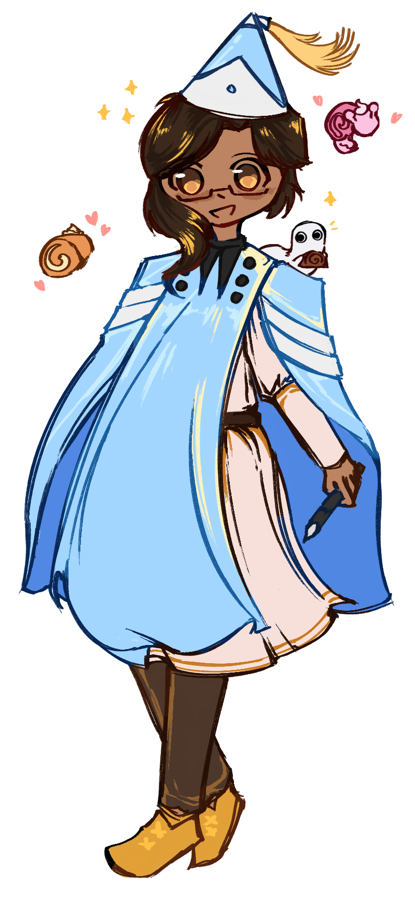

Steadfast Courage: to brave the waters despite all of their uncertainties, with both confidence and grace. to do and experience more, even when shrouded with so many 'what ifs.' someone who does it all, even when they're afraid. those with this character trait make the cutest buttons and stickers~

thank you for being so couragous, hailey.
it's hard to put into words how inspiring you are. you always put yourself out there with such confidence and enthusiasm, even when stress and anxiety threaten to drag it all down. and despite all of that, you still do it anyways. and that couragousness you have makes me want to try a little bit harder everyday.
sometimes that courage goes noticed, and other times it may not. but it never stops you from getting up and trying once again. and, i believe that your conviction alone is worth so much praise. i could never imagine doing the things that you do, and i really think that you deserve more credit. i think thats why i find you so inspiring: you never stop pushing yourself to do and experience more, even when its scary.
of course, your courage alone isn't the only thing i want to thank you for. you are an incredibly kind, sweet, and loving person, hailey. i remember being so anxious reaching out to you initially in that photography class. but you welcomed me with such open arms; i feel so lucky to have met you. whenever i get to spend time with you, you never fail to make me smile, laugh, and feel like myself. being around you makes me feel safe and cared for, because of how unbelievably outgoing and considerate you are to others. and, that's something i will always cherish about you.
so, thank you for everthing, hailey. you are truely a one-of-a-kind person, and i'll always be cheering you on! and of course, i'll always be here for you if you need any help with anything, even if it's just someone to talk to! it's the least i can do, afterall. happy thanksgiving!
love, stephen